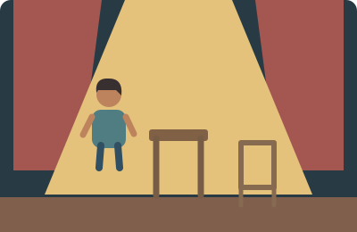
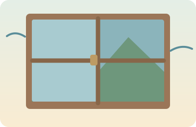

पुस्तक 05 · संपूर्ण हिंदीभाषा से
भाषा से
विचार तक।
साहित्य की परंपराएँ समझें। रस, छंद और शैली का विश्लेषण करें। अपने विचार प्रमाण और सृजन के साथ व्यक्त करें।
Book 05 · Class 10–12 inspired · Independent mastery readerअकआ


4भाग
40अध्याय
80पाठ
40कार्यपत्रक
मेरी प्रगति
0 / 80Saved on this device. No account needed.
प्रवेश: उन्नत हिंदी या समकक्ष पठन-लेखन एवं व्याकरण ज्ञान। यहाँ भाषा का विश्लेषण, साहित्यिक विवेचन और औपचारिक अभिव्यक्ति विकसित करें। Independent Class 10–12 inspired draft; not a board qualification. Educator review pending.
विषय-सूची
Table of contentsभाग 01 · PHASE 1
साहित्य का इतिहास
काल-विभाजन, भक्ति, रीति और आधुनिक साहित्य।
Literary history01साहित्य का इतिहास और काल-विभाजन
Literary history and periodization2 पाठ · 1 कार्यपत्रक
पढ़ें →02आदिकाल और प्रारंभिक साहित्य
Early Hindi literature2 पाठ · 1 कार्यपत्रक
पढ़ें → 03
03भक्तिकाल — निर्गुण धारा
Bhakti: nirgun traditions2 पाठ · 1 कार्यपत्रक
पढ़ें → 04
04भक्तिकाल — सगुण धारा
Bhakti: sagun traditions2 पाठ · 1 कार्यपत्रक
पढ़ें →05रीतिकाल और काव्यशास्त्र
Riti period2 पाठ · 1 कार्यपत्रक
पढ़ें →06आधुनिक हिंदी का आरंभ
Early modern Hindi2 पाठ · 1 कार्यपत्रक
पढ़ें → 07
07छायावाद और आधुनिक कविता
Chhayavad and modern poetry2 पाठ · 1 कार्यपत्रक
पढ़ें →08आधुनिक गद्य और कथा
Modern prose and fiction2 पाठ · 1 कार्यपत्रक
पढ़ें →09नाटक, निबंध और आत्मकथात्मक गद्य
Drama and nonfiction2 पाठ · 1 कार्यपत्रक
पढ़ें →10साहित्य इतिहास — समेकित अध्ययन
Literary history synthesis2 पाठ · 1 कार्यपत्रक
पढ़ें →भाग 02 · PHASE 2
काव्यशास्त्र और भाषा
रस, छंद, अलंकार, अर्थ और शैली का अध्ययन।
Poetics & language11रस सिद्धांत
Aesthetic sentiment2 पाठ · 1 कार्यपत्रक
पढ़ें →12छंद — मात्रा और वर्ण
Meter and syllabic weight2 पाठ · 1 कार्यपत्रक
पढ़ें →13अलंकार — ध्वनि और अर्थ
Figures of speech2 पाठ · 1 कार्यपत्रक
पढ़ें →14अर्थ की शक्तियाँ
Levels of meaning2 पाठ · 1 कार्यपत्रक
पढ़ें →15बिंब, प्रतीक और काव्य भाषा
Imagery and symbolism2 पाठ · 1 कार्यपत्रक
पढ़ें →16भाषा, शैली और शब्द-चयन
Diction and style2 पाठ · 1 कार्यपत्रक
पढ़ें →17उन्नत वाक्य विश्लेषण
Advanced syntax2 पाठ · 1 कार्यपत्रक
पढ़ें →18शब्दार्थ, बहुअर्थकता और मुहावरे
Semantics and idiom2 पाठ · 1 कार्यपत्रक
पढ़ें →19संपादन, वर्तनी और विराम
Editing and standard usage2 पाठ · 1 कार्यपत्रक
पढ़ें →20काव्य और भाषा — समेकित अभ्यास
Poetics synthesis2 पाठ · 1 कार्यपत्रक
पढ़ें →भाग 03 · PHASE 3
गद्य और आलोचनात्मक पठन
कथा, नाटक, निबंध, प्रमाण और पाठ का विश्लेषण।
Prose & criticism
 21
21कथा का आलोचनात्मक पठन
Critical reading of fiction2 पाठ · 1 कार्यपत्रक
पढ़ें → 22
22उपन्यास की संरचना
Novel structure2 पाठ · 1 कार्यपत्रक
पढ़ें → 23
23कविता का सूक्ष्म पाठ
Close reading of poetry2 पाठ · 1 कार्यपत्रक
पढ़ें →
24नाटक और मंचीय व्याख्या
Drama and performance2 पाठ · 1 कार्यपत्रक
पढ़ें → 25
25निबंध का आलोचनात्मक अध्ययन
Critical essay reading2 पाठ · 1 कार्यपत्रक
पढ़ें → 26
26संस्मरण और आत्मकथा का अध्ययन
Memoir and life writing2 पाठ · 1 कार्यपत्रक
पढ़ें → 27
27साहित्य और सामाजिक दृष्टि
Literature and society2 पाठ · 1 कार्यपत्रक
पढ़ें → 28
28तुलनात्मक साहित्य और रूपांतरण
Comparative literature and adaptation2 पाठ · 1 कार्यपत्रक
पढ़ें → 29
29अपठित पाठ और तर्क परीक्षण
Unseen text and argument testing2 पाठ · 1 कार्यपत्रक
पढ़ें → 30
30साहित्यिक आलोचना — समेकित लेख
Integrated literary criticism2 पाठ · 1 कार्यपत्रक
पढ़ें →भाग 04 · PHASE 4
व्यावसायिक और सृजनात्मक लेखन
पत्रकारिता, अनुवाद, शोध और स्वतंत्र अभिव्यक्ति।
Applied & creative writing 31
31पत्रकारिता और समाचार
Journalism and news2 पाठ · 1 कार्यपत्रक
पढ़ें → 32
32संपादकीय और जनसंचार
Editorial and public communication2 पाठ · 1 कार्यपत्रक
पढ़ें → 33
33कार्यालयी और औपचारिक हिंदी
Official Hindi2 पाठ · 1 कार्यपत्रक
पढ़ें → 34
34व्यावसायिक संप्रेषण
Business communication2 पाठ · 1 कार्यपत्रक
पढ़ें → 35
35अनुवाद — अर्थ और शैली
Translation: meaning and register2 पाठ · 1 कार्यपत्रक
पढ़ें →36शोध और संदर्भ लेखन
Research and citation2 पाठ · 1 कार्यपत्रक
पढ़ें →37विचारात्मक निबंध और आलोचना
Argumentative essays2 पाठ · 1 कार्यपत्रक
पढ़ें →
38सृजनात्मक लेखन और वाचन
Creative writing and performance2 पाठ · 1 कार्यपत्रक
पढ़ें → 39
39स्वतंत्र शोध परियोजना
Independent capstone project2 पाठ · 1 कार्यपत्रक
पढ़ें →40संपूर्ण हिंदी — अंतिम समेकित अध्ययन
Hindi mastery final assessment2 पाठ · 1 कार्यपत्रक
पढ़ें →अब आगे क्या?
अंतिम अध्याय में अपने पढ़ने, लिखने, बोलने और सुनने का अभ्यास जाँचें।
अंतिम अभ्यास → हिंदी विषय-सूची · आगे का अभ्यास